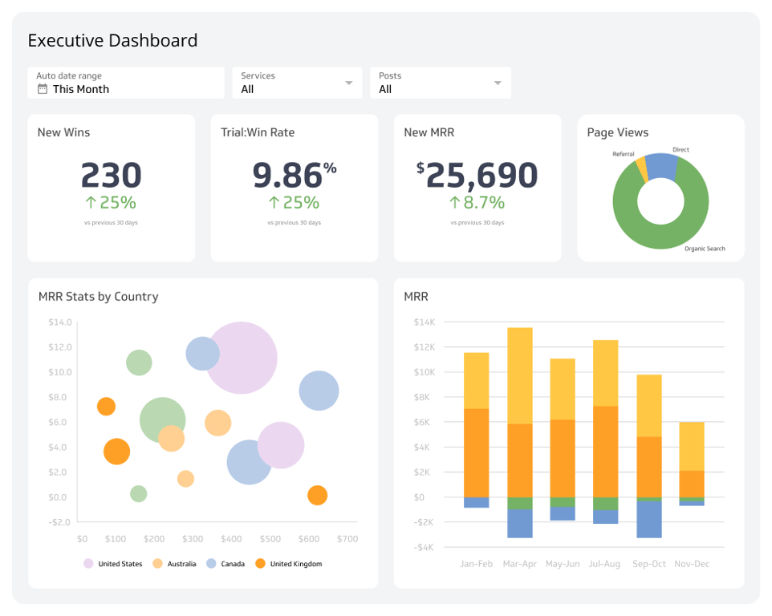

Analyzed airline operational and passenger loyalty data to identify high-value travel routes and support airline network planning decisions.
Performed feature engineering, exploratory analysis, and classification modeling to understand route value and premium passenger demand.
Analyzed approximately 19,000 job postings to study demand for data roles, experience levels, and skill domains.
Built an NLP-based role classification model using TF-IDF and Logistic Regression, achieving around 88% accuracy.
Developed an AI-powered evaluation system that scores and compares multiple LLM responses using a structured rubric.
Built a modular evaluation framework and deployed it with Streamlit.
Built an NLP-powered application that analyzes job descriptions, extracts skills, predicts roles, and provides resume-tailoring advice via Streamlit.

Here I performed feature engineering and used Ridge and Lasso models for prediction of sales prices for houses
Carried out feature engineering and optimization using random forest model, achieving an 85% accuracy in predicting customer churn.
Analyzed the Olympics dataset from 1896 to 2016. Focused on medal counts for India and the United States using SQL queries.

Advised a social media client on resource management through data cleaning, modeling, and content trend analysis.
Targeted high-value customers based on demographics and attributes, developing visual dashboards to communicate findings.

Analyzed employee attrition variables such as job role and work-life balance to provide strategic HR insights.